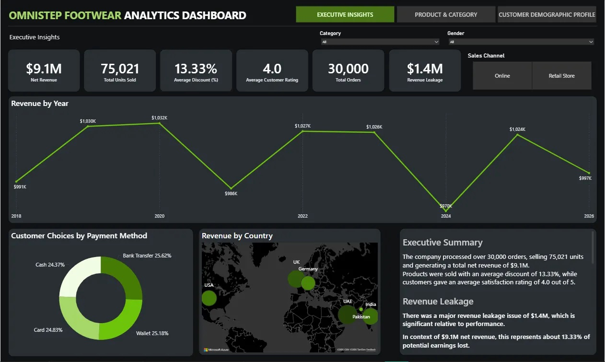
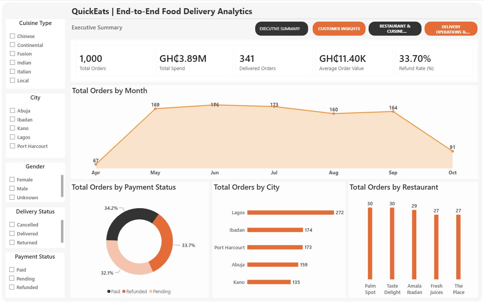

This project analyzes loan, financial, and credit risk performance for a fictional UK company called NovaBanc operating in multiple African countries using Power BI. By transforming an existing banking data model and DAX measures into an interactive dashboard, the analysis uncovered key lending trends, branch and country performance differences, profitability drivers, loan product performance, and default risk. The insights provide actionable recommendations to improve lending decisions, manage credit risk, optimize branch performance, and strengthen profitability, enabling faster, data-driven decision-making across NovaBanc's retail banking operations.


This project analyses supply chain, product, supplier, inventory, and transportation performance using Power BI.
By cleaning and transforming operational data with Power Query, building a star-schema data model, and developing
DAX measures and interactive dashboards, the analysis uncovered key revenue drivers, product and inventory
performance, supplier profitability, transportation costs, defect rates, and lead-time patterns. The insights
provide actionable recommendations to optimise inventory planning, strengthen supplier management, reduce
logistics costs, improve product quality, and enhance supply chain efficiency, enabling faster, data-driven
operational decision-making.

This project analyses sales, inventory, promotional, and economic data for a fictional North American consumer electronics retailer using SQL. Developed analytical queries to identify inventory inefficiencies, slow-moving products, seasonal stock build-up, promotional performance, and working capital tied up in unsold inventory. The analysis generated actionable insights to improve demand forecasting, inventory optimisation, promotional ROI, and supply chain efficiency, supporting data-driven commercial decision-making.

This project analysed Q4 2025 sales, customer, product, profitability, and regional performance for SALIENT Ventures a fictional US company using Microsoft Excel.
Cleaned and transformed transactional data, developed calculated metrics and pivot table analysis, and built an interactive dashboard to
track revenue, profit, margin, customer segments, product performance, and regional trends. The analysis identified key profit drivers,
high-value customer segments, and growth opportunities, providing actionable recommendations for inventory planning, customer retention,
marketing investment, and 2026 business strategy.

This project analyses global sales, customer, product, and pricing performance for OmniStep Footwear using Power BI.
By cleaning and transforming transactional data with Power Query, building a star-schema data model, and developing
DAX measures and interactive dashboards, the analysis uncovered key revenue drivers, discount effectiveness, customer
segment behaviour, geographic performance, and product demand patterns. The insights provide actionable recommendations
to optimise pricing and promotions, improve inventory planning, strengthen customer targeting, and support regional growth,
enabling faster, data-driven commercial decision-making.

This project analyses sales, product, pricing, and customer performance for a fictional consumer goods company using SQL.
By extracting, transforming, and analysing transactional data, the analysis identified high-value products and categories,
profitable customer locations, product pricing patterns, customer purchasing trends, and demand levels. The findings provide actionable recommendations to optimise product strategy, pricing, inventory planning, marketing investment, and regional operations, enabling more informed, data-driven decision-making and supporting sustainable business growth.

This project analyses customer, restaurant, delivery, and commercial performance for QuickEats, a
fictional African food-delivery platform, using PostgreSQL and Power BI. By cleaning and exploring
data with SQL, building a relational data model, developing DAX measures, and creating interactive dashboards,
the analysis identified delivery performance issues, high-value customers, cuisine and restaurant performance,
customer satisfaction trends, and rider productivity. The insights provide actionable recommendations to improve
delivery reliability, customer retention, restaurant efficiency, rider performance, and marketing strategy,
enabling faster, data-driven operational and commercial decision-making.